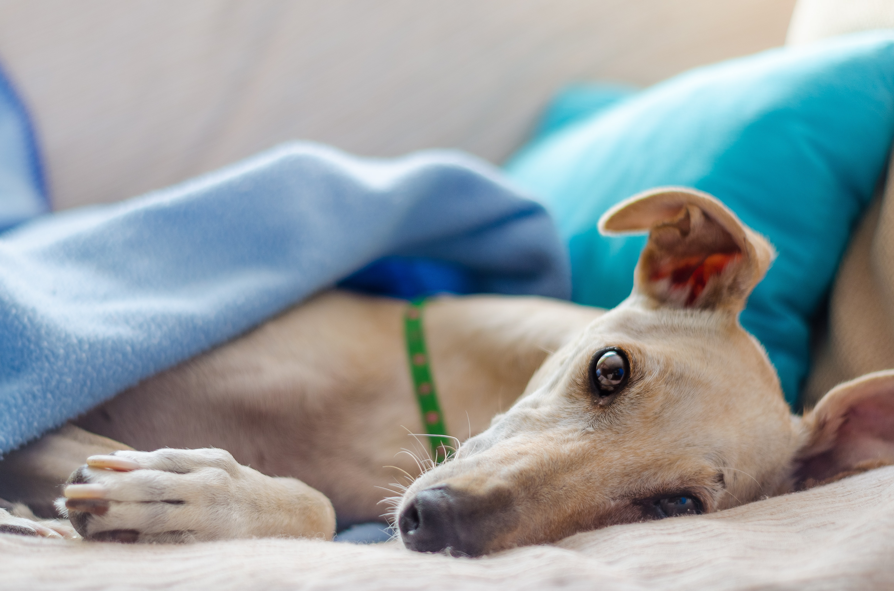

We offer full creative and production services for editorials and ads. Projects include campaigns, editorials, moving image or social media content. Our projects vary from full service shoots from start to finish to smaller roles in existing teams.
이탈리언 그레이하운드 [Italian Greyhound] 이탈리언 그레이하운드는 날씬한 체형과 사각형의 몸통을 가진 견종이다. 체구는 작지만 소형 사이트 하운드의 특성을 모두 갖췄다. 온순하고 다정한 성격을 가졌다.